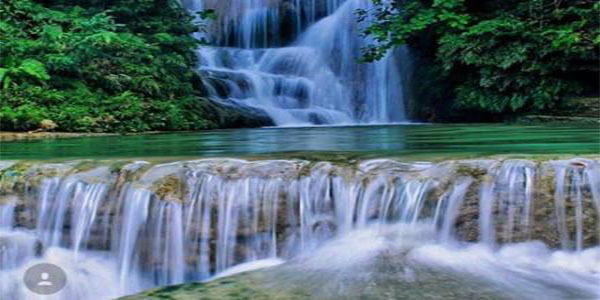
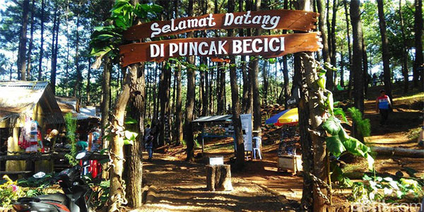

TOURIST DESTINATIONS IN BANTUL
Untuk yang gemar berwisata alam, destinasi wisata selanjutnya yang sangat direkomendasikan untuk anda kunjungi adalah Goa Cerme – yang merupakan sebuah Goa yang begitu indah dengan panjang 1.3 kilo meter. Keunikan utama yang ada di Goa Cerme ini adalah adanya sebuah air terjun cantik di bawah tanah. Fenomena unik ini menjadikan Goa Cerme semakin indah, berpadu dengan ornament alami gua yang sangat mempesona. Tak heran, Goa Cerme menjadi salah satu wisata alam Bantul yang paling digemari para pelancong yang suka dengan olahraga alam yang menantang.
Bantul memang kaya akan objek wisata religi dan wisata sejarahnya, salah satunya adalah Goa Selarong. Tempat wisata ini menurut sejarahnya merupakan tempat yang dulunya sering menjadi tempat bersemedi Pangeran Diponegoro. Selain itu, kawasan Goa Selarong juga pernah menjadi tempat bersembunyi dan markas pada saat terjadi perang gerilya. Selain kental akan unsur sejarahnya, di Goa Selarong juga terdapat sebuah kawasan bumi perkemahan yang cocok dihabiskan untuk camping bersama keluarga, atau camping bersama sahabat dan kerabat. Keindahan arsitektur alami Goa Selarong yang berpadu dengan kawasan hutan hijau, menjadikan panorama sekitar Goa Selarong begitu epic dan cocok untuk dijadikan objek berfoto.
Masih berada di kawasan Mangunan, Bantul, ada lagi nih satu objek wisata paling oke yang sangat direkomendasikan untuk dikunjungi ketika berlibur. Adalah hutan pinus Mangunan, sebuah hutan pinus yang eksotis yang cocok untuk menjadi destinasi wisata bersama keluarga. Sebagai salah satu wisata daerah Bantul, Hutan Pinus Mangunan ini juga terdapat camping ground dan outbond area yang seru dan menantang
Air Terjun Ledok Pokoh

wisata alam Bantul lainnya adalah air terjun Ledok Pokoh, atau biasa dikenal dengan nama air terjung Lepo. Di sini, pengunjung bisa menikmati pemandangan air terjun yang unik, mirip dengan Erawan Falls yang ada di Thailand. Air Terjun Ledok Pokoh merupakan sebuah air terjun yang menghubungkan empat kolam alami. Kedalaman kolam Lepo ini berbeda-beda, dari mulai setinggi lutut hingga kolam paling dalam mencapai kedalaman 2 meter. Kolam ini banyak menjadi tempat berenang para pengunjung yang datang. Apalagi dengan warna airnya yang kehijauan dan deburan air terjun yang menyegarkan terlihat sangat menggona untuk menceburkan diri ke dalamnya. Selain itu, tebing di sekitar air terjun juga tertata rapi nan alami yang semakin mempercantik pemandangan air terjun Ledok Pokoh.
Puncak Becici Dlingo Bantul

Berlokasi di Kecamantan Dlingo kabupaten Bantul, puncak Becici ini merupakan sebuah bukit yang cocok untuk anda yang suka dengan pemandangan alam yang hijau. Sebagai wisata alam Bantul, Puncak Becici ini menyuguhkan pemandangan hamparan sawah hijau yang berpadu dengan hijaunya hutan pinus di sekitarnya. Berada di obyek wisata Bantul satu ini, pengunjung juga bisa menikmati fasilitas rumah pohonnya yang unik dan cocok untuk menjadi objek berfoto eksis ala kekinian.